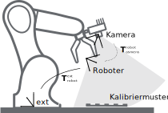
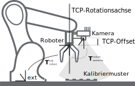
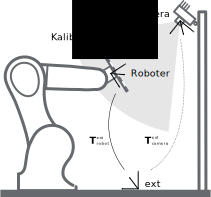
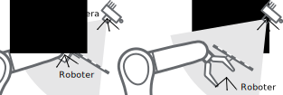
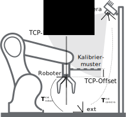
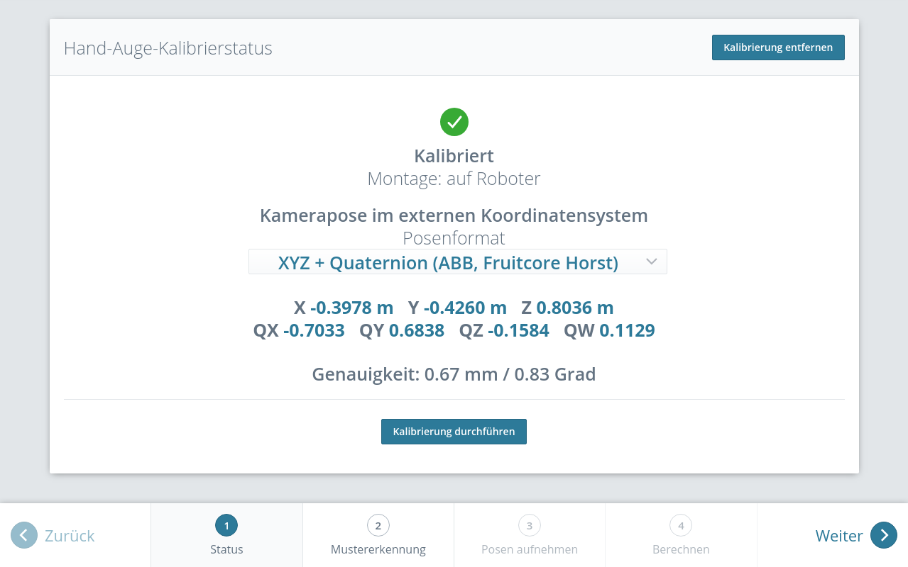
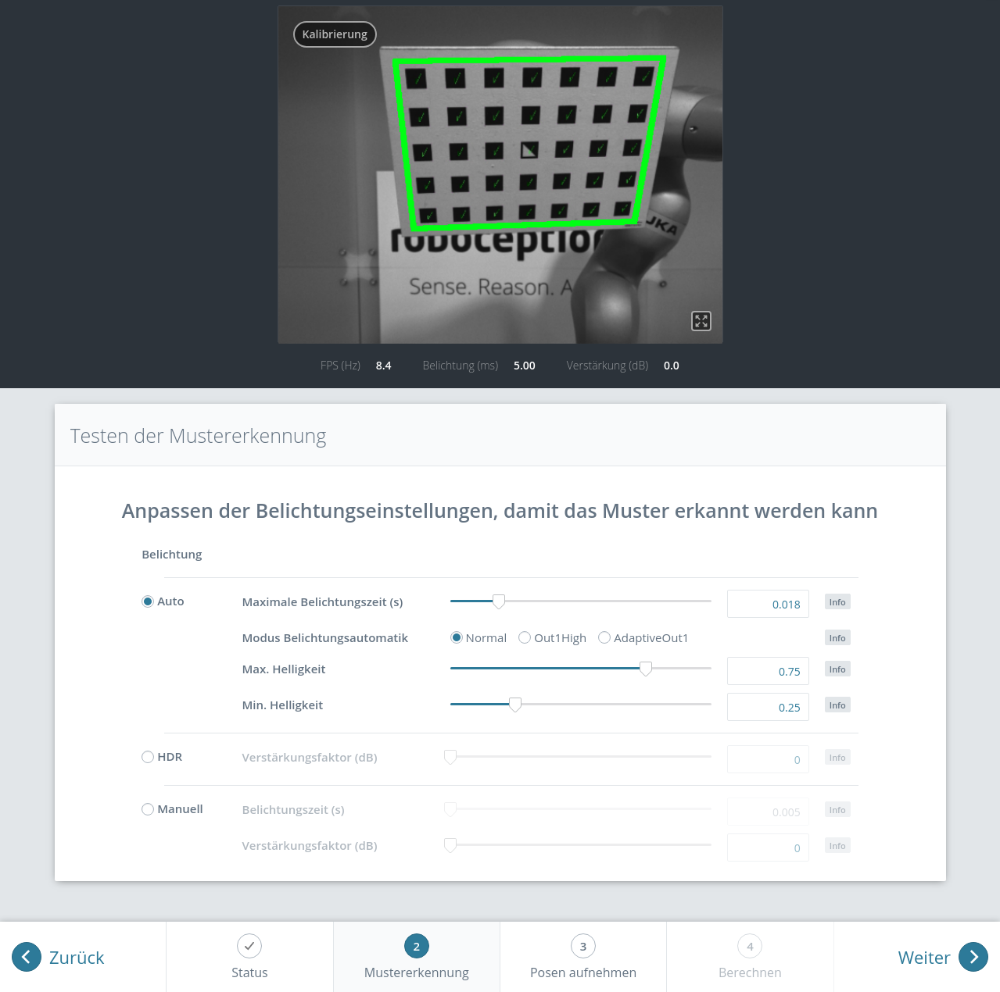

Hand-Auge-Kalibrierung¶
Für Anwendungen, bei denen die Kamera in eines oder mehrere Robotersysteme integriert wird, muss sie zum jeweiligen Roboter-Koordinatensystem kalibriert werden. Zu diesem Zweck wird der rc_visard NG mit einer internen Kalibrierroutine, dem Modul zur Hand-Auge-Kalibrierung, ausgeliefert. Dieses Modul ist ein Basismodul, welches auf jedem rc_visard NG verfügbar ist.
Bemerkung
Für die Hand-Auge-Kalibrierung ist es völlig unerheblich, in Bezug auf welches benutzerdefinierte Roboter-Koordinatensystem die Kamera kalibriert wird. Hierbei kann es sich um einen Endeffektor des Roboters (z.B. Flansch oder Tool Center Point (Werkzeugmittelpunkt)) oder um einen beliebigen anderen Punkt in der Roboterstruktur handeln. Einzige Voraussetzung für die Hand-Auge-Kalibrierung ist, dass die Pose (d.h. Positions- und Rotationswerte) dieses Roboter-Koordinatensystems in Bezug auf ein benutzerdefiniertes externes Koordinatensystem (z.B. Welt oder Roboter-Montagepunkt) direkt von der Robotersteuerung erfasst und an das Kalibriermodul übertragen werden kann.
Die Kalibrierroutine ist ein benutzerfreundliches mehrstufiges Verfahren, für das mit einem Kalibriermuster gearbeitet wird. Entsprechende Kalibriermuster können von Roboception bezogen werden.
Kalibrierschnittstellen¶
Für die Durchführung der Hand-Auge-Kalibrierung stehen die folgenden beiden Schnittstellen zur Verfügung:
Alle Services und Parameter dieses Moduls, die für eine programmgesteuerte Durchführung der Hand-Auge-Kalibrierung benötigt werden, sind in der REST-API-Schnittstelle des rc_visard NG enthalten. Der REST-API-Name dieses Moduls lautet
rc_hand_eye_calibrationund seine Services werden in Services erläutert.Bemerkung
Für den beschriebenen Ansatz wird eine Netzwerkverbindung zwischen dem rc_visard NG und der Robotersteuerung benötigt, damit die Steuerung die Roboterposen an das Kalibriermodul des rc_visard NG übertragen kann.
Für Anwendungsfälle, bei denen sich die Roboterposen nicht programmgesteuert an das Modul zur Hand-Auge-Kalibrierung des rc_visard NG übertragen lassen, sieht die Seite Hand-Auge-Kalibrierung unter dem Menüpunkt Konfiguration der Web GUI einen geführten Prozess vor, mit dem sich die Kalibrierroutine manuell durchführen lässt.
Bemerkung
Während der Kalibrierung muss der Benutzer die Roboterposen, auf die über das jeweilige Teach-in- oder Handheld-Gerät zugegriffen werden muss, manuell in die Web GUI eingeben.
Kameramontage¶
Wie in Abb. 30 und Abb. 32 dargestellt, ist für die Montage der Kamera zwischen zwei unterschiedlichen Anwendungsfällen zu unterscheiden:
- Die Kamera wird am Roboter montiert, d.h. sie ist mechanisch mit einem Roboterpunkt (d.h. Flansch oder flanschmontiertes Werkzeug) verbunden und bewegt sich demnach mit dem Roboter.
- Die Kamera ist nicht am Roboter montiert, sondern an einem Tisch oder anderen Ort in der Nähe des Roboters befestigt und verbleibt daher verglichen mit dem Roboter in einer statischen Position.
Die allgemeine Kalibrierroutine ist in beiden Anwendungsfällen sehr ähnlich. Sie unterscheidet sich jedoch hinsichtlich der semantischen Auslegung der Ausgabedaten, d.h. der erhaltenen Kalibriertransformation, und hinsichtlich der Befestigung des Kalibriermusters.
- Kalibrierung einer robotergeführten Kamera
Soll eine robotergeführte Kamera zum Roboter kalibriert werden, so muss das Kalibriermuster in einer statischen Position zum Roboter, z.B. auf einem Tisch oder festen Sockel, befestigt werden (siehe Abb. 30).
Warnung
Es ist äußerst wichtig, dass sich das Kalibriermuster in Schritt 2 der Kalibrierroutine nicht bewegt. Daher wird dringend empfohlen, das Muster in seiner Position sicher zu fixieren, um unbeabsichtigte Bewegungen, wie sie durch Vibrationen, Kabelbewegungen oder Ähnliches ausgelöst werden, zu verhindern.
Das Ergebnis der Kalibrierung (Schritt 3 der Kalibrierroutine) ist eine Pose \(\mathbf{T}^{\text{robot}}_{\text{camera}}\), die die (zuvor unbekannte) relative Transformation zwischen dem Kamera-Koordinatensystem und dem benutzerdefinierten Roboter-Koordinatensystem beschreibt, sodass Folgendes gilt:
(3)¶\[\mathbf{p}_{\text{robot}} = \mathbf{R}^{\text{robot}}_{\text{camera}} \cdot \mathbf{p}_{\text{camera}} + \mathbf{t}^{\text{robot}}_{\text{camera}} \:,\]wobei \(\mathbf{p}_{\text{robot}} = (x,y,z)^T\) ein 3D-Punkt ist, dessen Koordinaten im Roboter-Koordinatensystem angegeben werden, \(\mathbf{p}_{\text{camera}}\) denselben Punkt im Kamera-Koordinatensystem darstellt, und \(\mathbf{R}^{\text{robot}}_{\text{camera}}\) sowie \(\mathbf{t}^{\text{robot}}_{\text{camera}}\) die \(3\times 3\) Drehmatrix und den \(3\times 1\) Translationsvektor für eine Pose \(\mathbf{T}^{\text{robot}}_{\text{camera}}\) angeben. In der Praxis wird die Rotation für das Kalibrierergebnis und die Roboterposen als Eulerwinkel oder Quaternion anstatt einer Rotationsmatrix definiert (siehe Formate für Posendaten).
Abb. 30 Wichtige Koordinatensysteme und Transformationen für die Kalibrierung einer robotergeführten Kamera: Sie wird mit einer festen relativen Position zu einem benutzerdefinierten Roboter-Koordinatensystem (z.B. Flansch oder Werkzeugmittelpunkt) montiert. Es ist wichtig, dass die Pose \(\mathbf{T}^{\text{ext}}_{\text{robot}}\) des Roboter-Koordinatensystems in Bezug auf ein benutzerdefiniertes externes Referenzkoordinatensystem (ext) während der Kalibrierroutine gemessen werden kann. Das Ergebnis des Kalibriervorgangs ist die gewünschte Kalibriertransformation \(\mathbf{T}^{\text{robot}}_{\text{camera}}\), d.h. die Pose des Kamera-Koordinatensystems im benutzerdefinierten Roboter-Koordinatensystem.
Zusätzliche Benutzereingaben werden benötigt, falls die Bewegung des Roboters so beschränkt ist, dass der Tool Center Point (TCP) nur um eine Achse rotieren kann. Das ist üblicherweise für Roboter mit vier Freiheitsgraden (4DOF) der Fall, welche häufig zur Palettierung eingesetzt werden. In diesem Fall muss der Benutzer angeben, welche Achse des Roboterkoordinatensystems der Rotationsachse des TCP entspricht. Außerdem muss der vorzeichenbehaftete Offset vom TCP zum Kamerakoordinatensystem entlang der TCP-Rotationsachse angegeben werden. Abb. 31 zeigt die Situation.
Für den rc_visard NG befindet sich der Ursprung des Kamerakoordinatensystems im optischen Zentrum der linken Kamera. Die ungefähre Position wird im Abschnitt Koordinatensysteme angegeben.
Abb. 31 Im Fall eines 4DOF-Roboters müssen die TCP-Rotationsachse und der Offset vom TCP zum Kamerakoordinatensystem entlang der TCP-Rotationsachse angegeben werden. Im dargestellten Fall ist der Offset negativ.
- Kalibrierung einer statisch montierten Kamera
In Anwendungsfällen, bei denen die Kamera statisch verglichen zum Roboter montiert wird, muss das Kalibriermuster, wie im Beispiel in Abb. 32 und Abb. 33 angegeben, angebracht werden.
Bemerkung
Für das Modul zur Hand-Auge-Kalibrierung spielt es keine Rolle, wie das Kalibriermuster in Bezug auf das benutzerdefinierte Roboter-Koordinatensystem genau angebracht und positioniert wird. Das bedeutet, dass die relative Positionierung des Kalibriermusters zu diesem Koordinatensystem weder bekannt sein muss, noch für die Kalibrierroutine relevant ist (siehe in Abb. 33).
Warnung
Es ist äußerst wichtig, das Kalibriermuster sicher am Roboter anzubringen, damit sich seine relative Position in Bezug auf das in Schritt 2 der Kalibrierroutine vom Benutzer definierte Roboter-Koordinatensystem nicht verändert.
In diesem Anwendungsfall ist das Ergebnis der Kalibrierung (Schritt 3 der Kalibrierroutine) die Pose \(\mathbf{T}^{\text{ext}}_{\text{camera}}\), die die (zuvor unbekannte) relative Transformation zwischen dem Kamera-Koordinatensystem und dem benutzerdefinierten Roboter-Koordinatensystem beschreibt, sodass Folgendes gilt:
(4)¶\[\mathbf{p}_{\text{ext}} = \mathbf{R}^{\text{ext}}_{\text{camera}} \cdot \mathbf{p}_{\text{camera}} + \mathbf{t}^{\text{ext}}_{\text{camera}} \:,\]wobei \(\mathbf{p}_{\text{ext}} = (x,y,z)^T\) ein 3D-Punkt im externen Referenzkoordinatensystem ext, \(\mathbf{p}_{\text{camera}}\) derselbe Punkt im Kamerakoordinatensystem camera und \(\mathbf{R}^{\text{ext}}_{\text{camera}}\) sowie \(\mathbf{t}^{\text{ext}}_{\text{camera}}\) die \(3\times 3\) Rotationsmatrix und \(3\times 1\) Translationsvektor der Pose \(\mathbf{T}^{\text{ext}}_{\text{camera}}\) sind. In der Praxis wird die Rotation für das Kalibrierergebnis und die Roboterposen als Eulerwinkel oder Quaternion anstatt einer Rotationsmatrix definiert (siehe Formate für Posendaten).
Abb. 32 Wichtige Koordinatensysteme und Transformationen für die Kalibrierung einer statisch montierten Kamera: Sie wird mit einer festen Position relativ zu einem benutzerdefinierten externen Referenzkoordinatensystem ext (z.B. Weltkoordinatensystem oder Roboter-Montagepunkt) montiert. Es ist wichtig, dass die Pose \(\mathbf{T}^{\text{ext}}_{\text{robot}}\) des benutzerdefinierten Roboter-Koordinatensystems in Bezug auf dieses Koordinatensystem während der Kalibrierroutine gemessen werden kann. Das Ergebnis des Kalibrierprozesses ist die gewünschte Kalibriertransformation \(\mathbf{T}^{\text{ext}}_{\text{camera}}\), d.h. die Pose des Kamera-Koordinatensystems im benutzerdefinierten externen Koordinatensystem ext.
Abb. 33 Alternative Montageoptionen für die Befestigung des Kalibriermusters am Roboter
Zusätzliche Benutzereingaben werden benötigt, falls die Bewegung des Roboters so beschränkt ist, dass der Tool Center Point (TCP) nur um eine Achse rotieren kann. Das ist üblicherweise für Roboter mit vier Freiheitsgraden (4DOF) der Fall, welche häufig zur Palettierung eingesetzt werden. In diesem Fall muss der Benutzer angeben, welche Achse des Roboterkoordinatensystems der Rotationsachse des TCP entspricht. Außerdem muss der vorzeichenbehaftete Offset vom TCP zur sichtbaren Oberfläche des Kalibriermusters entlang der TCP-Rotationsachse angegeben werden. Das Kalibriermuster muss so angebracht werden, dass die TCP-Rotationsachse orthogonal zum Kalibriermuster verläuft. Abb. 34 zeigt die Situation.
Abb. 34 Im Fall eines 4DOF-Roboters müssen die TCP-Rotationsachse und der Offset vom TCP zur sichtbaren Oberfläche des Kalibriermusters entlang der TCP-Rotationsachse angegeben werden. Im dargestellten Fall ist der Offset negativ.
{kind=link}
{kind=link}
{kind=link}
{kind=link}
{kind=link}
Kalibrierroutine¶
Die Hand-Auge-Kalibrierung kann manuell über die Web GUI oder programmgesteuert über die REST-API-Schnittstelle durchgeführt werden. Die allgemeine Vorgehensweise wird beschrieben anhand der Schritte in der Web GUI unter . Verweise auf die zugehörigen REST-API Aufrufe werden an den entsprechenden Stellen bereitgestellt.
Schritt 1: Hand-Auge-Kalibrierstatus¶
Die Startseite des Assistenten für die Hand-Auge-Kalibrierung zeigt den aktuellen Status der Hand-Auge-Kalibrierung. Wenn eine Hand-Auge-Kalibrierung auf dem rc_visard NG gespeichert ist, wird die Kalibriertransformation hier angezeigt (siehe Abb. 35).
Abb. 35 Aktueller Status der Hand-Auge-Kalibrierung falls eine Hand-Auge-Kalibrierung gespeichert ist
{kind=link}
Um den Status der Hand-Auge-Kalibrierung programmgesteuert abzufragen bietet die REST-API den Service get_calibration (siehe Services). Eine vorhandene Hand-Auge-Kalibrierung kann über Kalibrierung entfernen oder den REST-API Service remove_calibration (siehe Services) gelöscht werden.
Durch Klick auf Kalibrierung durchführen wird eine neue Hand-Auge-Kalibrierung gestartet.
Schritt 2: Testen der Mustererkennung¶
Um gute Kalibrierergebnisse zu erzielen müssen die Bilder gut belichtet sein, damit das Kalibriermuster genau und verlässlich erkannt werden kann. In diesem Schritt kann die Erkennung des Kalibriermusters getestet werden und die Kameraeinstellungen können angepasst werden, falls nötig. Die erfolgreiche Erkennung des Kalibriermusters wird durch grüne Häkchen auf jedem Quadrat und einen dicken grünen Rahmen um das Kalibriermuster visualisiert, wie in Abb. 36 dargestellt ist.
Abb. 36 Testen der Mustererkennung
{kind=link}
Schritt 3: Posen aufnehmen¶
In diesem Schritt werden Bilder des Kalibriermusters an verschiedenen Roboterposen aufgenommen. Dabei ist sicherzustellen, dass das Kalibriermuster bei allen Posen im linken Kamerabild vollständig sichtbar ist. Zudem müssen die Roboterpositionen sorgsam ausgewählt werden, damit das Kalibriermuster aus unterschiedlichen Perspektiven aufgenommen wird. Abb. 37 zeigt eine schematische Darstellung der empfohlenen acht Ansichten.
{kind=link}
Abb. 37 Empfohlene Ansichten des Kalibriermusters während des Kalibriervorgangs. Im Fall von 4DOF-Robotern müssen andere Ansichten gewählt werden, welche so unterschiedlich wie möglich sein sollten.
Warnung
Die Kalibrierqualität, d.h. die Genauigkeit des berechneten Kalibrierergebnisses, hängt von den Ansichten des Kalibriermusters ab. Je vielfältiger die Perspektiven sind, desto besser gelingt die Kalibrierung. Werden sehr ähnliche Ansichten ausgewählt, d.h. wird die Pose des Roboters vor der Aufnahme einer neuen Kalibrierpose nur leicht variiert, kann dies zu einer ungenauen Schätzung der gewünschten Kalibriertransformation führen.
Nachdem der Roboter die jeweilige Kalibrierposition erreicht hat, muss die entsprechende Pose \(\mathbf{T}^{\text{ext}}_{\text{robot}}\) des benutzerdefinierten Roboter-Koordinatensystems im benutzerdefinierten externen Referenzkoordinatensystem ext an das Modul zur Hand-Auge-Kalibrierung übertragen werden. Hierfür bietet das Softwaremodul verschiedene Slots, in denen die gemeldeten Posen mit den zugehörigen Bildern der linken Kamera hinterlegt werden können. Alle gefüllten Slots werden dann verwendet, um die gewünschte Kalibriertransformation zwischen dem Kamera-Koordinatensystem und dem benutzerdefinierten Roboter-Koordinatensystem (bei robotergeführten Kameras) bzw. dem benutzerdefinierten externen Referenzkoordinatensystem ext (bei statisch montierten Kameras) zu berechnen.
In der Web GUI kann der Nutzer zwischen vielen verschiedenen Formaten für die Kalibrierposen wählen (siehe Formate für Posendaten). Wird die Kalibrierung über die REST-API vorgenommen, dann werden die Kalibrierdaten immer im Format XYZ+Quaternion angegeben. Die Web GUI bietet acht Slots (Nahaufnahme 1, Nahaufnahme 2, usw.), in die der Benutzer die Posen manuell eintragen kann. Neben jedem Slot wird eine Empfehlung für die Ansicht des Kalibriermusters angezeigt. Der Roboter sollte für jeden Slot so bewegt werden, dass die empfohlene Ansicht erreicht wird.
{kind=link}
Abb. 38 Setzen der ersten Kalibrierpose für die Hand-Auge-Kalibrierung bei einer statisch montierten Kamera
Nach Klick auf Pose setzen kann die Pose des benutzerdefinierten Roboter-Koordinatensystems manuell in die entsprechenden Textfelder eingegeben werden. Durch Bild aufnehmen werden die Pose und das aktuelle Kamerabild im jeweiligen Slot gespeichert.
Um diese Posen programmgesteuert zu übertragen, bietet die REST-API den Service set_pose (siehe Services).
Bemerkung
Der Zugriff auf die Posendaten des Roboters hängt vom Modell des Roboters und seinem Hersteller ab. Möglicherweise lassen sie sich über ein im Lieferumfang des Roboters enthaltenes Teach-in- oder Handheld-Gerät ablesen.
Warnung
Es ist wichtig darauf zu achten, dass genaue und korrekte Werte eingegeben werden. Selbst kleinste Ungenauigkeiten oder Tippfehler können dazu führen, dass die Kalibrierung fehlschlägt.
Die Web GUI zeigt die aktuell gespeicherten Kalibrierposen (nur mit den Slot-Nummern 0-7) und die zugehörigen Kamerabilder an und ermöglicht auch das Löschen von einzelnen Posen über Pose löschen, oder das Löschen aller gesetzten Posen über Alle Posen löschen. In der REST-API können die aktuell gespeicherten Kalibrierposen über get_poses abgefragt und über delete_poses oder reset_calibration einzeln bzw. komplett gelöscht werden (siehe Services).
Wenn mindestens vier Posen gesetzt wurden, gelangt man über die Schaltfläche Weiter zur Berechnung des Kalibrierergebnisses.
Bemerkung
Um die Transformation für die Hand-Auge-Kalibrierung erfolgreich zu berechnen, müssen mindestens vier verschiedene Roboter-Kalibrierposen übertragen und in Slots hinterlegt werden. Um Kalibrierfehler zu verhindern, die durch ungenaue Messungen entstehen können, sind mindestens acht Kalibrierposen empfohlen.
Schritt 4: Kalibrierung berechnen¶
Bevor das Kalibrierergebnis berechnet werden kann, muss der Nutzer die korrekten Kalibrierparameter angeben. Diese beinhalten die exakten Abmessungen des Kalibriermusters und die Art der Sensormontage. Weiterhin kann die Kalibrierung von 4DOF-Robotern eingestellt werden. In diesem Fall müssen die Rotationsachse, sowie der Offset vom TCP zum Kamerakoordinatensystem (für Kameras am Roboter) oder zur Oberfläche des Kalibriermusters (für statische Kameras) angegeben werden. Für die REST-API sind die entsprechenden Parameter aufgelistet.
{kind=link}
Abb. 39 Setzen der Parameter und Berechnen der Hand-Auge-Kalibrierung in der Web GUI des rc_visard NG
Wenn die Parameter korrekt sind, kann durch Kalibrierung berechnen die gewünschte Kalibriertransformation aus den aufgenommenen Kalibrierposen und den zugehörigen Kamerabildern berechnet werden. Die REST-API bietet diese Funktion über den Service calibrate (siehe Services).
Je nachdem, wie die Kamera montiert ist, wird dabei die Transformation (d.h. die Pose) zwischen dem Kamera-Koordinatensystem und entweder dem benutzerdefinierten Roboter-Koordinatensystem (bei robotergeführten Kameras) oder dem benutzerdefinierten externen Referenzkoordinatensystem ext (bei statisch montierten Kameras) berechnet und ausgegeben (siehe Kameramontage).
Damit der Benutzer die Qualität der resultierenden Kalibriertransformation beurteilen kann, werden die translatorischen und rotatorischen Kalibrierfehler ausgegeben. Diese Werte werden aus der Varianz des Kalibrierergebnisses berechnet.
Wenn der Kalibrierfehler nicht akzeptabel ist, können die Kalibrierparameter geändert und das Ergebnis neu berechnet werden. Außerdem ist es möglich, zu Schritt 3 zurückzukehren, um mehr Posen aufzunehmen oder die vorhandenen Posen zu aktualisieren.
Durch Klicken auf Kalibrierung speichern oder über den REST-API Service save_calibration (siehe Services) wird das Kalibrierergebnis gespeichert.
Parameter¶
Das Modul zur Hand-Auge-Kalibrierung wird in der REST-API als rc_hand_eye_calibration bezeichnet und in der Web GUI unter dargestellt. Der Benutzer kann die Kalibrierparameter entweder dort oder über die REST-API-Schnittstelle ändern.
Übersicht über die Parameter¶
Dieses Softwaremodul bietet folgende Laufzeitparameter:
| Name | Typ | Min. | Max. | Default | Beschreibung |
|---|---|---|---|---|---|
grid_height |
float64 | 0.0 | 10.0 | 0.0 | Höhe des Kalibriermusters in Metern |
grid_width |
float64 | 0.0 | 10.0 | 0.0 | Breite des Kalibriermusters in Metern |
robot_mounted |
bool | false | true | true | Angabe, ob der rc_visard auf einem Roboter montiert ist |
tcp_offset |
float64 | -10.0 | 10.0 | 0.0 | Offset vom TCP entlang tcp_rotation_axis |
tcp_rotation_axis |
int32 | -1 | 2 | -1 | -1 für aus, 0 für x, 1 für y, 2 für z |
Beschreibung der Laufzeitparameter¶
Für die Beschreibungen der Parameter sind die in der Web GUI gewählten Namen der Parameter in Klammern angegeben.
grid_width (Breite)¶
Breite des Kalibriermusters in Metern. Die Breite sollte mit sehr hoher Genauigkeit, vorzugsweise im Submillimeterbereich, angegeben werden.
Über die REST-API kann dieser Parameter wie folgt gesetzt werden.
PUT http://<host>/api/v2/pipelines/0/nodes/rc_hand_eye_calibration/services/parameters?grid_width=<value>PUT http://<host>/api/v1/nodes/rc_hand_eye_calibration/parameters?grid_width=<value>
grid_height (Höhe)¶
Höhe des Kalibriermusters in Metern. Die Höhe sollte mit sehr hoher Genauigkeit, vorzugsweise im Submillimeterbereich, angegeben werden.
Über die REST-API kann dieser Parameter wie folgt gesetzt werden.
PUT http://<host>/api/v2/pipelines/0/nodes/rc_hand_eye_calibration/services/parameters?grid_height=<value>PUT http://<host>/api/v1/nodes/rc_hand_eye_calibration/parameters?grid_height=<value>
robot_mounted (Sensormontage)¶
Ist dieser Parameter auf true gesetzt, dann ist die Kamera an einem Roboter montiert. Ist er auf false gesetzt, ist sie statisch montiert und das Kalibriermuster ist am Roboter angebracht.
Über die REST-API kann dieser Parameter wie folgt gesetzt werden.
PUT http://<host>/api/v2/pipelines/0/nodes/rc_hand_eye_calibration/services/parameters?robot_mounted=<value>PUT http://<host>/api/v1/nodes/rc_hand_eye_calibration/parameters?robot_mounted=<value>
tcp_offset (TCP-Offset)¶
Der vorzeichenbehaftete Offset vom TCP zum Kamerakoordinatensystem (für Kameras auf dem Roboter) oder der sichtbaren Oberfläche des Kalibriermusters (für statische Kameras) entlang der TCP-Rotationsachse in Metern. Dies wird benötigt, falls die Roboterbewegung eingeschränkt ist, sodass der TCP nur um eine Achse gedreht werden kann (z.B. bei 4DOF-Robotern).
Über die REST-API kann dieser Parameter wie folgt gesetzt werden.
PUT http://<host>/api/v2/pipelines/0/nodes/rc_hand_eye_calibration/services/parameters?tcp_offset=<value>PUT http://<host>/api/v1/nodes/rc_hand_eye_calibration/parameters?tcp_offset=<value>
tcp_rotation_axis (TCP-Rotationsachse)¶
Die Achse des Roboterkoordinatensystems, um die der Roboter seinen TCP drehen kann. 0 für X-, 1 für Y- und 2 für Z-Achse. Dies wird benötigt falls, die Roboterbewegung eingeschränkt ist, sodass der TCP nur um eine Achse gedreht werden kann (z.B. bei 4DOF-Robotern). -1 bedeutet, dass der Roboter seinen TCP um zwei unabhängige Achsen drehen kann.
tcp_offsetwird in diesem Fall ignoriert.Über die REST-API kann dieser Parameter wie folgt gesetzt werden.
PUT http://<host>/api/v2/pipelines/0/nodes/rc_hand_eye_calibration/services/parameters?tcp_rotation_axis=<value>PUT http://<host>/api/v1/nodes/rc_hand_eye_calibration/parameters?tcp_rotation_axis=<value>
Services¶
Auf die Services, die die REST-API für die programmgesteuerte Durchführung der Hand-Auge-Kalibrierung und für die Wiederherstellung der Modulparameter bietet, wird im Folgenden näher eingegangen.
get_calibration¶
Hiermit wird die derzeit auf dem rc_visard NG gespeicherte Hand-Auge-Kalibrierung abgerufen.
Details
Dieser Service kann wie folgt aufgerufen werden.
PUT http://<host>/api/v2/pipelines/0/nodes/rc_hand_eye_calibration/services/get_calibrationPUT http://<host>/api/v1/nodes/rc_hand_eye_calibration/services/get_calibrationDieser Service hat keine Argumente.Das Feld
errorgibt den Kalibrierfehler in Pixeln an, der aus dem translatorischen Fehlertranslation_error_meterund dem rotatorischen Fehlerrotation_error_degreeberechnet wird. Dieser Wert wird nur aus Kompatibilitätsgründen mit älteren Versionen angegeben. Die translatorischen und rotatorischen Fehler sollten bevorzugt werden.
Tab. 31 Rückgabewerte des get_calibration-Services¶statussuccessBeschreibung 0 trueeine gültige Kalibrierung wurde zurückgegeben 2 falsedie Kalibrierung ist nicht verfügbar Die Definition der Response mit jeweiligen Datentypen ist:
{ "name": "get_calibration", "response": { "error": "float64", "message": "string", "pose": { "orientation": { "w": "float64", "x": "float64", "y": "float64", "z": "float64" }, "position": { "x": "float64", "y": "float64", "z": "float64" } }, "robot_mounted": "bool", "rotation_error_degree": "float64", "status": "int32", "success": "bool", "translation_error_meter": "float64" } }
remove_calibration¶
Dieser Service löscht die persistente Hand-Auge-Kalibrierung auf dem rc_visard NG. Nach diesem Aufruf gibt der
get_calibrationService zurück, dass keine Hand-Auge-Kalibrierung vorliegt. Dieser Service löscht ebenfalls alle gespeicherten Kalibrierposen und die zugehörigen Kamerabilder.Details
Dieser Service kann wie folgt aufgerufen werden.
PUT http://<host>/api/v2/pipelines/0/nodes/rc_hand_eye_calibration/services/remove_calibrationPUT http://<host>/api/v1/nodes/rc_hand_eye_calibration/services/remove_calibrationDieser Service hat keine Argumente.
Tab. 32 Rückgabewerte des get_calibration-Services¶statussuccessBeschreibung 0 truepersistente Kalibrierung gelöscht, Gerät nicht mehr kalibriert 1 truekeine persistente Kalibrierung gefunden, Gerät nicht kalibriert 2 falsedie Kalibrierung konnte nicht gelöscht werden Die Definition der Response mit jeweiligen Datentypen ist:
{ "name": "remove_calibration", "response": { "message": "string", "status": "int32", "success": "bool" } }
set_pose¶
Dieser Service setzt die Roboterpose als Kalibrierpose für die Hand-Auge-Kalibrierroutine und nimmt das aktuelle Bild des Kalibriermusters auf.
Details
Dieser Service kann wie folgt aufgerufen werden.
PUT http://<host>/api/v2/pipelines/0/nodes/rc_hand_eye_calibration/services/set_posePUT http://<host>/api/v1/nodes/rc_hand_eye_calibration/services/set_poseDas
slot-Argument wird verwendet, um den verschiedenen Kalibrierpositionen eindeutige Ziffern im Wertebereich von 0-15 zuzuordnen. Wann immer der Serviceset_poseaufgerufen wird, wird ein Kamerabild aufgezeichnet. Dieser Service schlägt fehl, wenn das Kalibriermuster im aktuellen Bild nicht erkannt werden kann.Die Definition der Request-Argumente mit jeweiligen Datentypen ist:
{ "args": { "pose": { "orientation": { "w": "float64", "x": "float64", "y": "float64", "z": "float64" }, "position": { "x": "float64", "y": "float64", "z": "float64" } }, "slot": "uint32" } }
Tab. 33 Rückgabewerte des set_pose-Services¶statussuccessBeschreibung 1 truePose erfolgreich gespeichert 3 truePose erfolgreich gespeichert. Es wurden genügend Posen für die Kalibrierung gespeichert, d.h. die Kalibrierung kann durchgeführt werden 4 falsedas Kalibriermuster wurde nicht erkannt, z.B. weil es im Kamerabild nicht vollständig sichtbar ist 8 falsekeine Bilddaten verfügbar 12 falsedie angegebenen Orientierungswerte sind ungültig 13 falseungültige Slot-Nummer Die Definition der Response mit jeweiligen Datentypen ist:
{ "name": "set_pose", "response": { "message": "string", "status": "int32", "success": "bool" } }
get_poses¶
Dieser Service gibt die aktuell gespeicherten Kalibrierposen für die Hand-Auge-Kalibrierung zurück.
Details
Dieser Service kann wie folgt aufgerufen werden.
PUT http://<host>/api/v2/pipelines/0/nodes/rc_hand_eye_calibration/services/get_posesPUT http://<host>/api/v1/nodes/rc_hand_eye_calibration/services/get_posesDieser Service hat keine Argumente.
Tab. 34 Rückgabewerte des get_poses-Services¶statussuccessBeschreibung 0 truegespeicherte Posen werden zurückgeliefert 1 truekeine Kalibrierposen verfügbar Die Definition der Response mit jeweiligen Datentypen ist:
{ "name": "get_poses", "response": { "message": "string", "poses": [ { "pose": { "orientation": { "w": "float64", "x": "float64", "y": "float64", "z": "float64" }, "position": { "x": "float64", "y": "float64", "z": "float64" } }, "slot": "uint32" } ], "status": "int32", "success": "bool" } }
delete_poses¶
Dieser Service löscht die Kalibrierposen und die zugehörigen Bilder mit den angegebenen Nummern in
slots.Details
Dieser Service kann wie folgt aufgerufen werden.
PUT http://<host>/api/v2/pipelines/0/nodes/rc_hand_eye_calibration/services/delete_posesPUT http://<host>/api/v1/nodes/rc_hand_eye_calibration/services/delete_posesDas Argument
slotsgibt die Ziffern der Kalibrierposen an, die gelöscht werden sollen. Wennslotsleer ist, werden keine Kalibrierposen gelöscht.Die Definition der Request-Argumente mit jeweiligen Datentypen ist:
{ "args": { "slots": [ "uint32" ] } }
Tab. 35 Rückgabewerte des delete_poses-Services¶statussuccessBeschreibung 0 truePosen erfolgreich gelöscht 1 trueKeine Slots angegeben Die Definition der Response mit jeweiligen Datentypen ist:
{ "name": "delete_poses", "response": { "message": "string", "status": "int32", "success": "bool" } }
reset_calibration¶
Hiermit werden alle zuvor aufgenommenen Posen mitsamt der zugehörigen Bilder gelöscht. Das letzte hinterlegte Kalibrierergebnis wird neu geladen. Dieser Service kann verwendet werden, um die Hand-Auge-Kalibrierung (neu) zu starten.
Details
Dieser Service kann wie folgt aufgerufen werden.
PUT http://<host>/api/v2/pipelines/0/nodes/rc_hand_eye_calibration/services/reset_calibrationPUT http://<host>/api/v1/nodes/rc_hand_eye_calibration/services/reset_calibrationDieser Service hat keine Argumente.Die Definition der Response mit jeweiligen Datentypen ist:
{ "name": "reset_calibration", "response": { "message": "string", "status": "int32", "success": "bool" } }
calibrate¶
Dieser Service dient dazu, das Ergebnis der Hand-Auge-Kalibrierung auf Grundlage der über den Service
set_posekonfigurierten Roboterposen zu berechnen und auszugeben.Details
Damit die Kalibrierung für andere Module mit
get_calibrationverfügbar ist und persistent gespeichert wird, musssave_calibrationaufgerufen werden.Bemerkung
Zur Berechnung der Transformation der Hand-Auge-Kalibrierung werden mindestens vier Roboterposen benötigt (siehe
set_pose). Empfohlen wird jedoch die Verwendung von acht Kalibrierposen.Dieser Service kann wie folgt aufgerufen werden.
PUT http://<host>/api/v2/pipelines/0/nodes/rc_hand_eye_calibration/services/calibratePUT http://<host>/api/v1/nodes/rc_hand_eye_calibration/services/calibrateDieser Service hat keine Argumente.Das Feld
errorgibt den Kalibrierfehler in Pixeln an, der aus dem translatorischen Fehlertranslation_error_meterund dem rotatorischen Fehlerrotation_error_degreeberechnet wird. Dieser Wert wird nur aus Kompatibilitätsgründen mit älteren Versionen angegeben. Die translatorischen und rotatorischen Fehler sollten bevorzugt werden.
Tab. 36 Rückgabewerte des calibrate-Services¶statussuccessBeschreibung 0 trueKalibrierung erfolgreich, das Kalibrierergebnis wurde zurückgegeben. 1 falseNicht genügend Posen gespeichert, um die Kalibrierung durchzuführen 2 falseDas berechnete Ergebnis ist ungültig, bitte prüfen Sie die Eingabewerte. 3 falseDie angegebenen Abmessungen des Kalibriermusters sind ungültig. 4 falseUngenügende Rotation, tcp_offsetandtcp_rotation_axismüssen angegeben werden5 falseGenügend Rotation verfügbar, tcp_rotation_axismuss auf -1 gesetzt werden6 falseDie Posen sind nicht unterschiedlich genug. Die Definition der Response mit jeweiligen Datentypen ist:
{ "name": "calibrate", "response": { "error": "float64", "message": "string", "pose": { "orientation": { "w": "float64", "x": "float64", "y": "float64", "z": "float64" }, "position": { "x": "float64", "y": "float64", "z": "float64" } }, "robot_mounted": "bool", "rotation_error_degree": "float64", "status": "int32", "success": "bool", "translation_error_meter": "float64" } }
save_calibration¶
Hiermit wird das Ergebnis der Hand-Auge-Kalibrierung persistent auf dem rc_visard NG gespeichert und das vorherige Ergebnis überschrieben. Das gespeicherte Ergebnis lässt sich jederzeit über den Service
get_calibrationabrufen. Dieser Service löscht ebenfalls alle gespeicherten Kalibrierposen und die zugehörigen Kamerabilder.Details
Dieser Service kann wie folgt aufgerufen werden.
PUT http://<host>/api/v2/pipelines/0/nodes/rc_hand_eye_calibration/services/save_calibrationPUT http://<host>/api/v1/nodes/rc_hand_eye_calibration/services/save_calibrationDieser Service hat keine Argumente.
Tab. 37 Rückgabewerte des save_calibration-Services¶statussuccessBeschreibung 0 truedie Kalibrierung wurde erfolgreich gespeichert 1 falsedie Kalibrierung konnte nicht im Dateisystem gespeichert werden 2 falsedie Kalibrierung ist nicht verfügbar Die Definition der Response mit jeweiligen Datentypen ist:
{ "name": "save_calibration", "response": { "message": "string", "status": "int32", "success": "bool" } }
set_calibration¶
Hiermit wird die übergebene Transformation als Hand-Auge-Kalibrierung gesetzt.
Details
Die Kalibrierung wird im gleichen Format erwartet, in dem sie beim
calibrateundget_calibrationAufruf zurückgegeben wird. Die gegebene Kalibrierung wird auch persistent gespeichert, indem internsave_calibrationaufgerufen wird.Dieser Service kann wie folgt aufgerufen werden.
PUT http://<host>/api/v2/pipelines/0/nodes/rc_hand_eye_calibration/services/set_calibrationPUT http://<host>/api/v1/nodes/rc_hand_eye_calibration/services/set_calibrationDie Definition der Request-Argumente mit jeweiligen Datentypen ist:
{ "args": { "pose": { "orientation": { "w": "float64", "x": "float64", "y": "float64", "z": "float64" }, "position": { "x": "float64", "y": "float64", "z": "float64" } }, "robot_mounted": "bool" } }
Tab. 38 Rückgabewerte des set_calibration-Services¶statussuccessBeschreibung 0 trueSetzen der Kalibrierung war erfolgreich 12 falsedie angegebenen Orientierungswerte sind ungültig Die Definition der Response mit jeweiligen Datentypen ist:
{ "name": "set_calibration", "response": { "message": "string", "status": "int32", "success": "bool" } }
reset_defaults¶
Hiermit werden die Werkseinstellungen der Parameter dieses Moduls wieder hergestellt und angewandt („factory reset“). Dies hat keine Auswirkungen auf das Kalibrierergebnis oder auf die während der Kalibrierung gefüllten
Slots. Es werden lediglich Parameter, wie die Maße des Kalibriermusters oder die Montageart des Sensors, zurückgesetzt.Details
Dieser Service kann wie folgt aufgerufen werden.
PUT http://<host>/api/v2/pipelines/0/nodes/rc_hand_eye_calibration/services/reset_defaultsPUT http://<host>/api/v1/nodes/rc_hand_eye_calibration/services/reset_defaultsDieser Service hat keine Argumente.Die Definition der Response mit jeweiligen Datentypen ist:
{ "name": "reset_defaults", "response": { "return_code": { "message": "string", "value": "int16" } } }